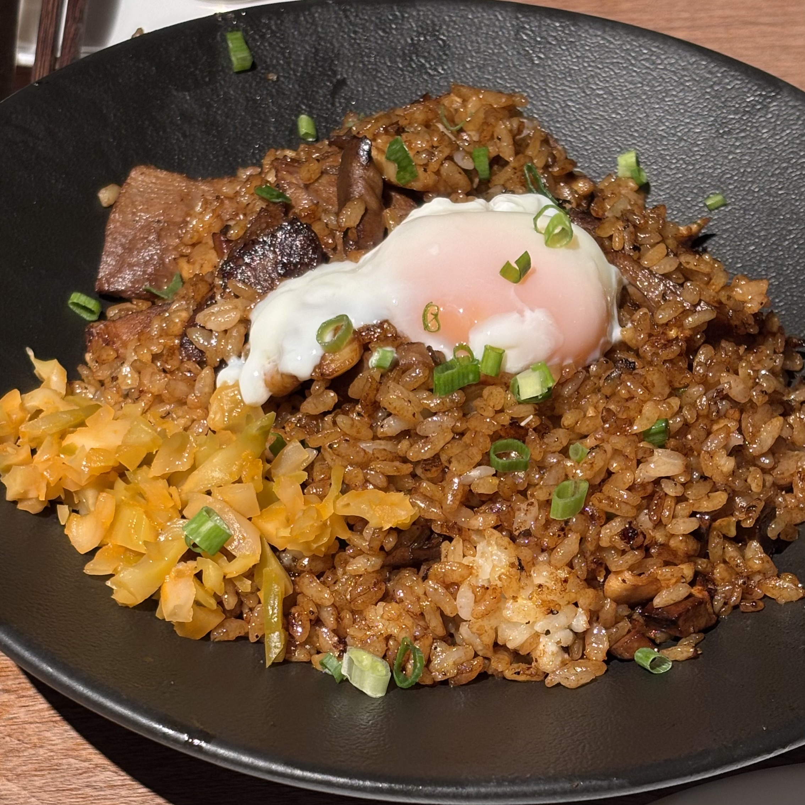

Amber Tide Root Risotto

Description
A slow-simmered risotto built around fictional “tide roots,” a sweet-saline
tuber said to grow where coastal fog meets soil. The dish balances mineral
notes with warm amber aromatics, finishing creamy but not heavy.
What you need
- Tide roots (imaginary coastal tubers), peeled and diced
- Pearled risotto rice
- Shallots, finely minced
- Dry white wine
- Vegetable stock infused with kelp
- Amber resin oil (fictional aromatic oil)
- Unsalted butter
- Grated aged cave cheese (imaginary)
- Sea salt and cracked white pepper Lemon zest
How to make
- Warm the kelp-infused stock and keep it at a bare simmer.
-
In a wide pan, soften shallots in butter until translucent. Add tide
roots and cook briefly to coat.
- Stir in rice and toast lightly until edges turn translucent.
- Deglaze with wine and cook until absorbed.
-
Add hot stock one ladle at a time, stirring steadily, allowing each
addition to absorb before the next.
-
When rice is al dente and creamy, remove from heat. Fold in amber resin
oil, cheese, lemon zest, salt, and pepper.
- Rest one minute, then serve with a final drizzle of resin oil.
Take Me Home